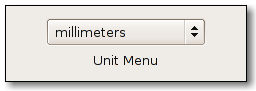

| GIMP Widgets Library Reference Manual | ||||
|---|---|---|---|---|
GimpUnitMenuGimpUnitMenu — Widget for selecting a GimpUnit. |
 |
GimpUnitMenu;
GtkWidget* gimp_unit_menu_new (const gchar *format,
GimpUnit unit,
gboolean show_pixels,
gboolean show_percent,
gboolean show_custom);
void gimp_unit_menu_set_unit (GimpUnitMenu *menu,
GimpUnit unit);
GimpUnit gimp_unit_menu_get_unit (GimpUnitMenu *menu);
gint gimp_unit_menu_get_pixel_digits (GimpUnitMenu *menu);
void gimp_unit_menu_set_pixel_digits (GimpUnitMenu *menu,
gint digits);
GObject
+----GInitiallyUnowned
+----GtkObject
+----GtkWidget
+----GtkContainer
+----GtkBin
+----GtkButton
+----GtkOptionMenu
+----GimpUnitMenu
This widget provides a GtkOptionMenu which contains a list of GimpUnit's.
You can specify the string that will be displayed for each unit by
passing a printf-like format string to gimp_unit_menu_new().
The constructor also lets you choose if the menu should contain items for GIMP_UNIT_PIXEL, GIMP_UNIT_PERCENT and a "More..." item which will pop up a dialog for selecting user-defined units.
Whenever the user selects a unit from the menu or the dialog, the "unit_changed" signal will be emitted.
GtkWidget* gimp_unit_menu_new (const gchar *format,
GimpUnit unit,
gboolean show_pixels,
gboolean show_percent,
gboolean show_custom);
Creates a new GimpUnitMenu widget.
The format string supports the following percent expansions:
| % f | Factor (how many units make up an inch) |
| % y | Symbol (e.g. "''" for GIMP_UNIT_INCH) |
| % a | Abbreviation |
| % s | Singular |
| % p | Plural |
| %% | Literal percent |
format : |
A printf-like format string which is used to create the unit strings. |
unit : |
The initially selected unit. |
show_pixels : |
TRUE if the unit menu should contain an item for
GIMP_UNIT_PIXEL.
|
show_percent : |
TRUE in the unit menu should contain an item for
GIMP_UNIT_PERCENT.
|
show_custom : |
TRUE if the unit menu should contain a "More..." item for
opening the user-defined-unit selection dialog.
|
| Returns : | A pointer to the new GimpUnitMenu widget. |
void gimp_unit_menu_set_unit (GimpUnitMenu *menu, GimpUnit unit);
Sets a new GimpUnit for the specified GimpUnitMenu.
menu : |
The unit menu you want to set the unit for. |
unit : |
The new unit. |
GimpUnit gimp_unit_menu_get_unit (GimpUnitMenu *menu);
Returns the GimpUnit the user has selected from the GimpUnitMenu.
menu : |
The unit menu you want to know the unit of. |
| Returns : | The unit the user has selected. |
gint gimp_unit_menu_get_pixel_digits (GimpUnitMenu *menu);
Retrieve the number of digits for a pixel size as set by
gimp_unit_set_pixel_digits().
menu : |
a GimpUnitMenu |
| Returns : | the configured number of digits for a pixel size |
void gimp_unit_menu_set_pixel_digits (GimpUnitMenu *menu, gint digits);
A GimpUnitMenu can be setup to control the number of digits shown
by attached spinbuttons. Please refer to the documentation of
gimp_unit_menu_update() to see how this is done.
This function allows to specify the number of digits shown for a size in pixels. Usually this is 0 (only full pixels). If you want to allow the user to specify sub-pixel sizes using the attached spinbuttons, specify the number of digits after the decimal point here. You should do this after attaching your spinbuttons.
menu : |
a GimpUnitMenu |
digits : |
the number of digits to display for a pixel size |
void user_function (GimpUnitMenu *arg0, gpointer user_data) : Run first
This signal is emitted whenever the user selects a GimpUnit from the GimpUnitMenu.
user_data : |
user data set when the signal handler was connected. |